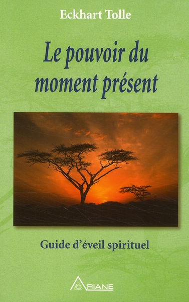

Le jeu d'échecs est un jeu de stratégie intellectuelle qui oppose deux joueurs sur un plateau de 64 cases. Chaque participant commande une armée composée de 16 pièces, comprenant un roi, une dame, deux tours, deux fous, deux cavaliers et huit pions. L'objectif principal est d'amener le roi adverse dans une position d'échec et d'échec mat, où il est menacé de capture sans possibilité d'évasion. Les pièces se déplacent selon des règles spécifiques, créant un ensemble complexe de tactiques et de stratégies. Le jeu, réputé pour son profond niveau de réflexion, met en lumière des notions telles que la planification à long terme, la positionnement stratégique, et la prévision des mouvements adverses. Le jeu d'échecs, pratiqué à travers le monde depuis des siècles, offre une combinaison unique de compétition, de créativité et de concentration, faisant de lui l'un des jeux de société les plus emblématiques et stimulants.
 ➡️Voici un jeu que j'ai joué avec un robot de 1700 ELO
➡️Voici un jeu que j'ai joué avec un robot de 1700 ELO
La lecture, en tant que loisir, offre une évasion captivante dans des mondes imaginaires, des aventures historiques, ou des réflexions profondes. C'est une activité qui transcende les frontières du temps et de l'espace, permettant aux lecteurs de se plonger dans des expériences variées sans quitter le confort de leur espace personnel. Le loisir de la lecture offre non seulement une détente mentale, mais il stimule également l'imagination, améliore la concentration, et enrichit le vocabulaire. Que ce soit à travers la fiction, la non-fiction, la poésie ou d'autres genres, la lecture devient une fenêtre ouverte sur la diversité des idées et des perspectives. En tant que passe-temps intemporel, la lecture offre un équilibre précieux entre l'instruction et le divertissement, nourrissant l'âme et élargissant les horizons intellectuels des amateurs de livres.
Voici mes livres préférés:
Le loisir de la musique transcende les frontières culturelles et temporelles, offrant une expérience sensorielle riche et émotionnelle. Que l'on soit auditeur passionné, musicien amateur ou expert, la musique enrichit nos vies de manière significative. Elle a le pouvoir de susciter des émotions profondes, de créer des souvenirs durables, et de fournir un moyen unique d'expression artistique. Le simple acte d'écouter de la musique peut être relaxant, énergisant, ou émotionnellement cathartique, offrant un échappatoire bienvenu du stress quotidien. Pour ceux qui s'adonnent à la création musicale, que ce soit par le biais d'instruments ou de la voix, le processus devient une source d'accomplissement personnel et de connexion avec les autres passionnés de musique. Le loisir de la musique, qu'il soit contemplatif ou actif, incarne la diversité culturelle, stimule la créativité, et crée des liens intimes entre les individus au-delà des barrières linguistiques ou géographiques.
Voici mes chanteurs préférés:
Contactez moi en clickant sur le bouton suivant:
CONTACTER MOI
© BARRAD Marouane.